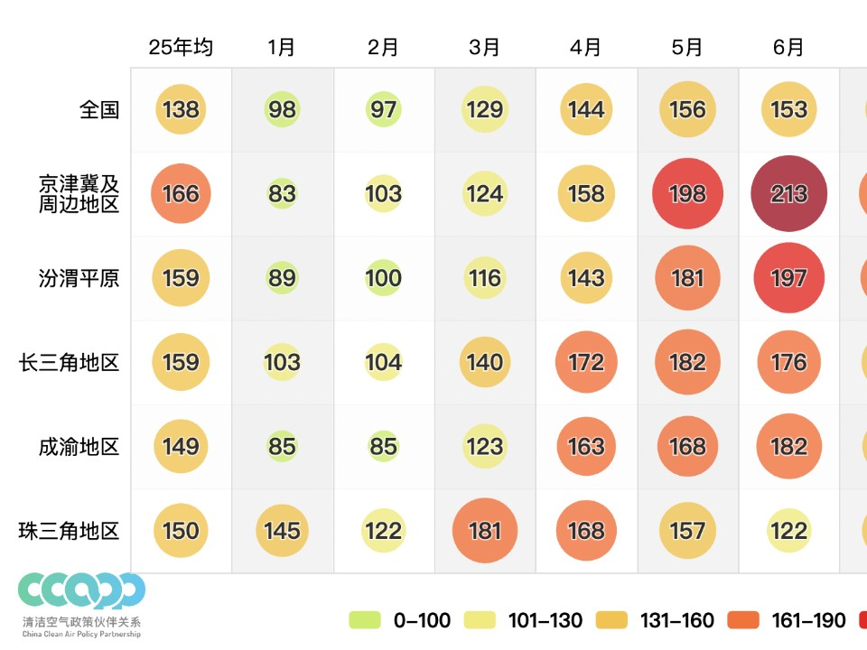
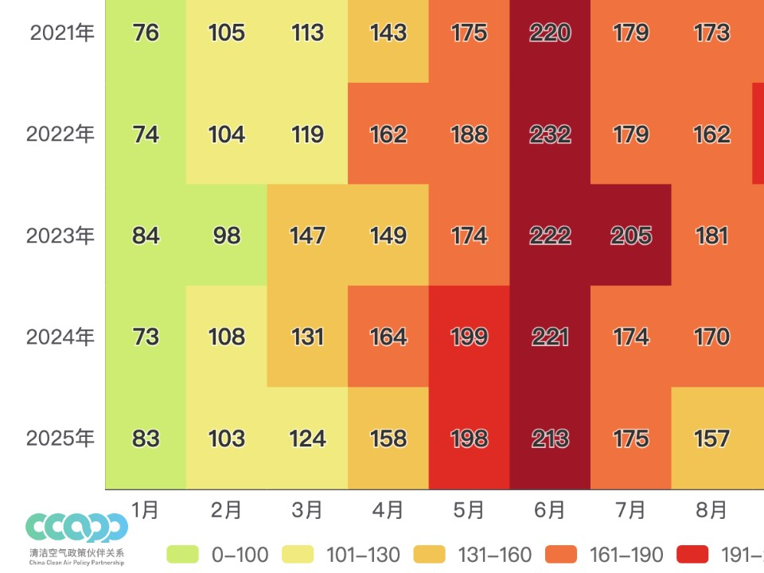
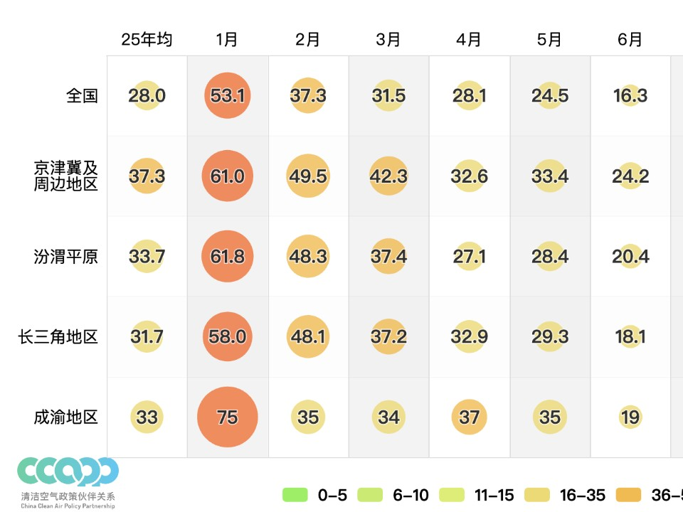
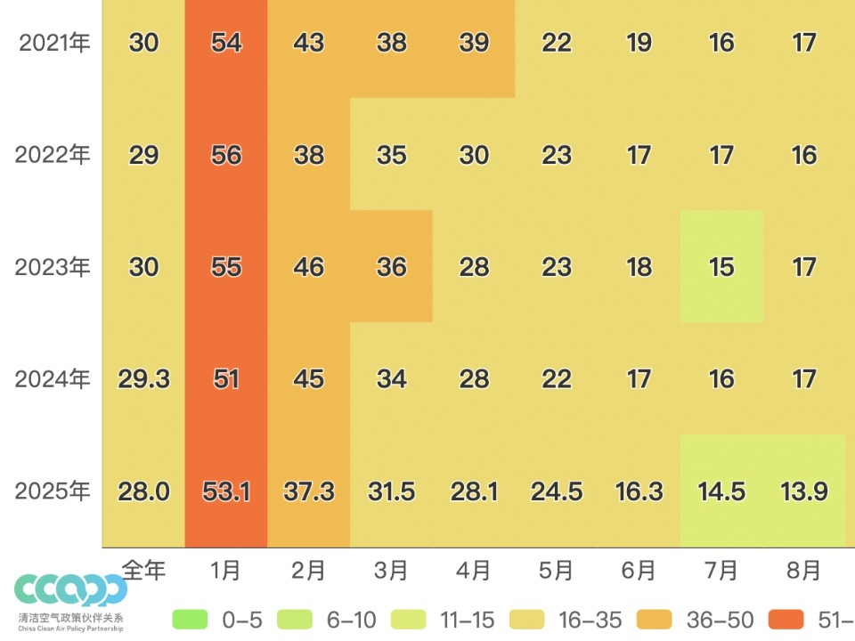
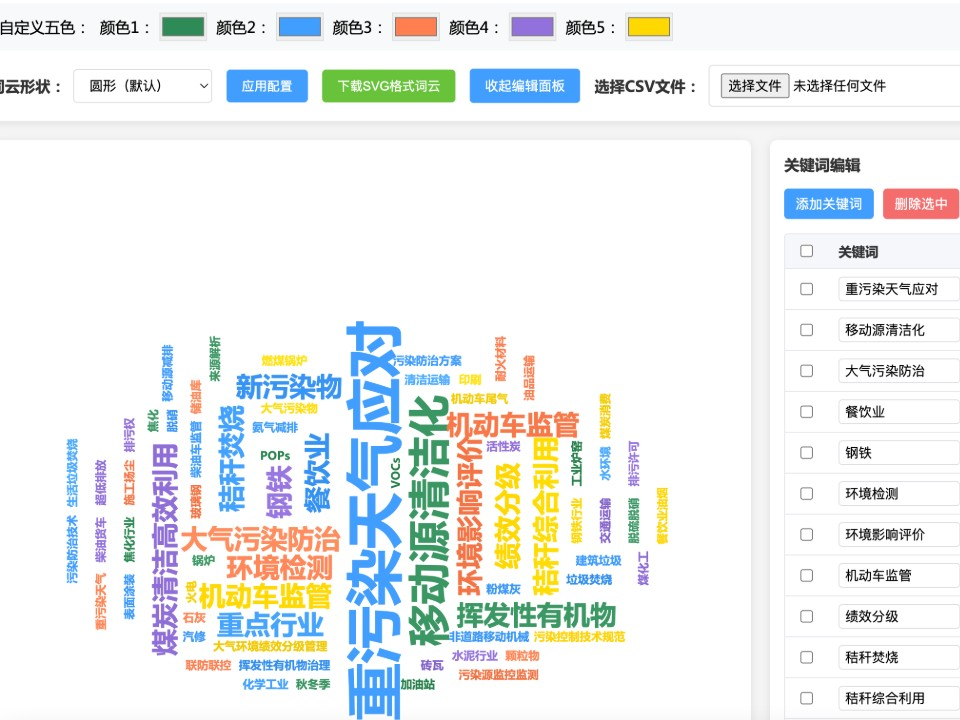
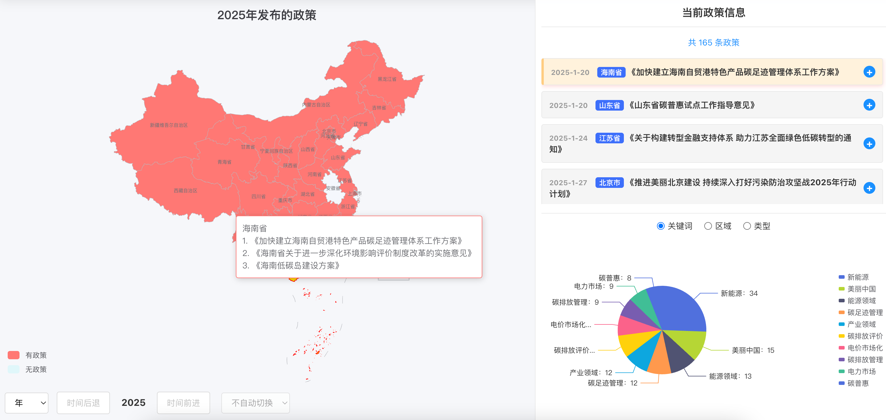
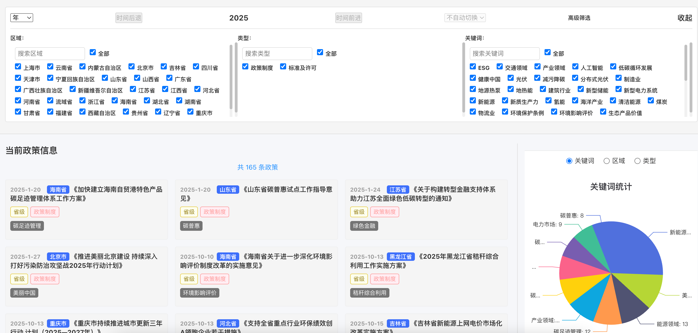

动画柱状图
带有动画效果的柱状图工具，支持自定义柱子宽度、图例显示和X轴文字角度，直观展示环境数据的对比。

臭氧浓度气泡图
以气泡图形式展示不同区域的臭氧浓度数据，通过气泡大小和颜色直观反映臭氧浓度的分布情况。

臭氧浓度趋势图
展示臭氧浓度的月度趋势变化，包含多个区域的对比分析，帮助您了解臭氧污染的时间分布特征。

PM2.5浓度气泡图
以气泡图形式展示不同区域的PM2.5浓度数据，通过颜色编码直观反映污染程度，支持数据精度保持。

PM2.5浓度趋势图
以热力图形式展示PM2.5浓度的月度变化趋势，包含多个区域的对比分析，支持自定义颜色分段。

关键词云图
将环境相关关键词以词云形式展示，支持从CSV文件导入数据，可自定义关键词和权重，直观呈现重点关注领域。

政策地图
以地图形式展示环境政策的空间分布，直观呈现不同地区的政策覆盖情况和重点关注领域。

政策列表
以列表形式展示环境政策的详细信息，包含政策名称、发布时间、适用地区等关键信息，方便快速查询和筛选。